CohortHonestDiD: a detailed guide
Estimation, assumptions, options, and executed results
Ziyi Liu
Source:vignettes/detailed-guide.Rmd
detailed-guide.RmdStart here
This guide shows how to choose the assumptions, read the results, and
use the main options of CohortHonestDiD 1.0.0, which
implements Liu (2026), Cohort-Anchored HonestDiD. For a shorter
introduction, see
vignette("getting-started", package = "CohortHonestDiD").
For an applied analysis, read estimation, targets, and reading results.
For estimates from other software, see external
estimates; numerical controls explains
computing costs and unresolved searches.
Write for a cohort’s adoption index on the ordered analysis grid, for a period index, and . Period is the adoption period and the last untreated period. Calendar labels are kept for display, but the restrictions use the ordered grid.
A cohort’s block bias
is its untreated-outcome trend relative to its initial control group
under the estimator’s normalization: the units still untreated when it
adopts for imp and cs_nyt, and the
never-treated units for cs_nt. It enters the bias of the
estimated coefficients through a known bias map,
.
The sensitivity restrictions apply to block biases; they place no
restriction on how treatment effects change over time. The guide uses
these terms:
- Procedures. The conditional procedure (Conditional) and the conditional least-favorable hybrid (C-LF) of Andrews, Roth, and Pakes (2023) invert tests, so a confidence set can consist of several pieces. The fixed-length confidence interval (FLCI) of Armstrong and Kolesár (2018) is an optimized linear estimate plus or minus a half-length; it is available only under SD.
-
SD scope. The post-only restriction
(
full.path = FALSE) bounds the slope changes that involve post-treatment periods. The full-path restriction (full.path = TRUE) also bounds those among pre-treatment periods. - Plug-in identified set. The identified set computed as if the estimated coefficients were the true ones. ATT plots show it as a shaded band.
-
Framework. Cohort inference
(
framework = "cohort", the default) restricts each cohort’s block bias. Aggregate inference restricts the aggregated event-study coefficients instead. Both support ATT and dynamic targets; cohort-dynamic targets require the cohort framework.
| Restriction | Meaning of the bound | Procedures | Default procedure | Default SD scope |
|---|---|---|---|---|
| Second differences (SD) | Change in the slope of a cohort’s block-bias path between consecutive periods; outcome units | FLCI, Conditional, C-LF | C-LF | Post-only (full path for FLCI) |
| Relative magnitudes (RM) | Post-treatment change relative to the cohort’s largest pre-treatment change; no units | Conditional, C-LF | C-LF | Not applicable |
The paper recommends cohort inference with the Conditional or C-LF
procedure, under the post-only restriction for SD; the defaults are
cohort inference with C-LF, post-only under SD.
cohort_fit(covariance = "CR2") gives the bias-reduced
covariance (Section 2). Every interval in this guide
is pointwise, not a simultaneous band over periods or bounds.
The sensitivity approach is that of Rambachan and Roth (2023), A More Credible Approach to Parallel Trends, Review of Economic Studies, 90(5), 2555–2591, https://doi.org/10.1093/restud/rdad018. The data are the county minimum-wage application of Callaway and Sant’Anna (2021), Difference-in-Differences with Multiple Time Periods, Journal of Econometrics, 225(2), 200–230.
The code below uses three small helpers to print tables.
knitr::opts_chunk$set(collapse = TRUE, comment = "#>", fig.width = 8,
fig.height = 4.8, dpi = 120, warning = TRUE, message = TRUE)
library(CohortHonestDiD)
library(ggplot2)## Warning: package 'ggplot2' was built under R version 4.5.3
tab <- function(x, digits = 5, ...) knitr::kable(x, digits = digits, row.names = FALSE, ...)
sets <- function(x) x$intervals[, c("target", "M", "component", "lower", "upper", "success", "status")]
rows <- function(xs, labels = names(xs)) do.call(rbind, Map(function(x, label) {
cbind(example = label, sets(x))
}, xs, labels))1. Fit the minimum-wage application
The bundled outcome Y is log teen employment.
D equals one from the first year in which a county’s state
minimum wage exceeds the federal minimum of $5.15, and treatment is
absorbing.
data(minimum_wage)
tab(data.frame(rows = nrow(minimum_wage),
counties = length(unique(minimum_wage$id)),
first_year = min(minimum_wage$year), last_year = max(minimum_wage$year),
periods = length(unique(minimum_wage$year))))| rows | counties | first_year | last_year | periods |
|---|---|---|---|---|
| 15988 | 2284 | 2001 | 2007 | 7 |
| id | year | Y | D |
|---|---|---|---|
| 8001 | 2001 | 8.73069 | 0 |
| 8001 | 2002 | 8.54130 | 0 |
| 8001 | 2003 | 8.46147 | 0 |
| 8001 | 2004 | 8.33687 | 0 |
| 8001 | 2005 | 8.34022 | 0 |
| 8001 | 2006 | 8.37816 | 0 |
Formula, column names, and estimator choice
The formula must be exactly outcome ~ treatment, with
the unit and time columns in index, in that order.
Covariates and transformations are not supported.
fit_imp <- cohort_fit(Y ~ D, data = minimum_wage, index = c("id", "year"),
estimator = "imp")
fit_nyt <- cohort_fit(Y ~ D, data = minimum_wage, index = c("id", "year"),
estimator = "cs_nyt")
fit_nt <- cohort_fit(data = minimum_wage, Y = "Y", D = "D", index = c("id", "year"),
estimator = "cs_nt")
print(fit_imp)
#> Cohort difference-in-differences fit
#> Estimator: imp
#> Covariance: CR1 cluster-robust, 2284 clusters
#> Cohorts: 3 | Coefficients: 21
#> cohort units clusters mass
#> 0 1377 1377 1377
#> 4 100 100 100
#> 6 223 223 223
#> 7 584 584 584imp is the imputation estimator; cs_nyt and
cs_nt are the Callaway-Sant’Anna estimators with
not-yet-treated and never-treated controls. The column-name interface
used for fit_nt is equivalent to the formula; supply one or
the other.
empirical <- list(imp = fit_imp, cs_nyt = fit_nyt, cs_nt = fit_nt)
comparison <- do.call(rbind, lapply(names(empirical), function(nm) {
x <- empirical[[nm]]
j <- x$coordinate_info$type == "post"
data.frame(estimator = nm, cohort = x$coordinate_info$cohort[j],
relative_period = x$coordinate_info$relative_period[j],
estimate = as.numeric(coef(x)[j]), se = sqrt(diag(vcov(x)))[j])
}))
tab(comparison)| estimator | cohort | relative_period | estimate | se |
|---|---|---|---|---|
| imp | 4 | 1 | -0.02578 | 0.01355 |
| imp | 4 | 2 | -0.06391 | 0.01495 |
| imp | 4 | 3 | -0.10365 | 0.01557 |
| imp | 4 | 4 | -0.12087 | 0.01881 |
| imp | 6 | 1 | 0.02142 | 0.01162 |
| imp | 6 | 2 | -0.03355 | 0.01156 |
| imp | 7 | 1 | -0.05070 | 0.00907 |
| cs_nyt | 4 | 1 | -0.03999 | 0.01925 |
| cs_nyt | 4 | 2 | -0.07812 | 0.02050 |
| cs_nyt | 4 | 3 | -0.11821 | 0.01993 |
| cs_nyt | 4 | 4 | -0.13561 | 0.02260 |
| cs_nyt | 6 | 1 | -0.01166 | 0.00877 |
| cs_nyt | 6 | 2 | -0.07138 | 0.00925 |
| cs_nyt | 7 | 1 | -0.02759 | 0.00733 |
| cs_nt | 4 | 1 | -0.03393 | 0.01940 |
| cs_nt | 4 | 2 | -0.07051 | 0.02072 |
| cs_nt | 4 | 3 | -0.12528 | 0.02017 |
| cs_nt | 4 | 4 | -0.13561 | 0.02260 |
| cs_nt | 6 | 1 | -0.02330 | 0.00909 |
| cs_nt | 6 | 2 | -0.07138 | 0.00925 |
| cs_nt | 7 | 1 | -0.02759 | 0.00733 |
The rows compare the same cohort-period cells; the estimators differ because they use different comparisons, in their control units and baseline periods. The full covariance includes dependence across periods and across cohorts.
Support and covariance diagnostics
tab(fit_imp$diagnostics$cohort_counts)| cohort | units | clusters | mass |
|---|---|---|---|
| 0 | 1377 | 1377 | 1377 |
| 4 | 100 | 100 | 100 |
| 6 | 223 | 223 | 223 |
| 7 | 584 | 584 | 584 |
tab(data.frame(estimator = names(empirical),
covariance_rank = vapply(empirical, function(x) x$diagnostics$covariance_rank, numeric(1)),
normalized_dimension = vapply(empirical, function(x) x$diagnostics$normalized_dimension, numeric(1))))| estimator | covariance_rank | normalized_dimension |
|---|---|---|
| imp | 18 | 18 |
| cs_nyt | 18 | 18 |
| cs_nt | 18 | 18 |
plot(fit_imp, type = "dynamic", main = "Minimum wage: conventional event study",
xlab = "Relative period (1 = adoption)", ylab = "Log teen employment")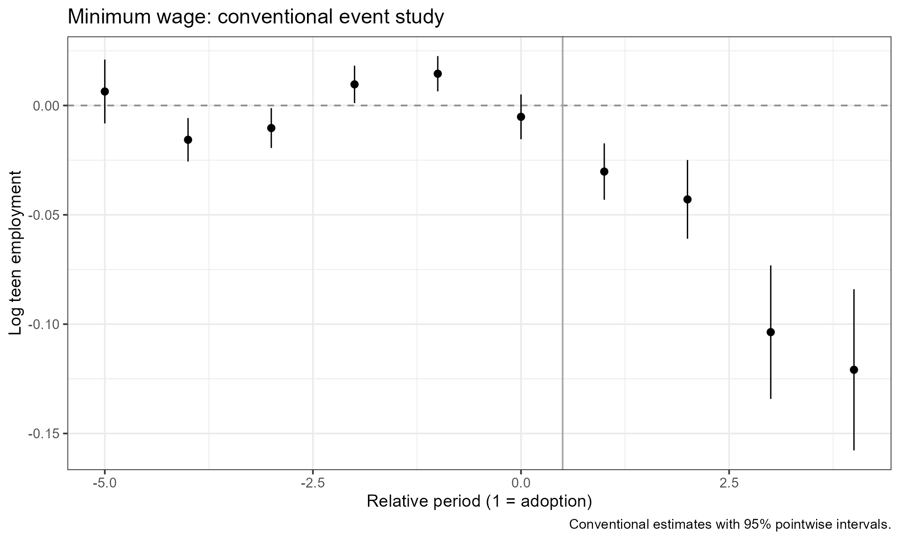
The coefficient normalizations reduce the covariance rank by design,
so compare the rank with normalized_dimension, and check
the cluster and cell counts. With very few clusters, the estimated
covariance can be unreliable even when the computation succeeds.
plot(fit) shows conventional 95% pointwise intervals.
2. Weights, clusters, and panel histories
By default, the unit identifier defines the clusters and every unit
has weight one. cluster and weights each
accept a column name or a row-aligned vector. Both must be fixed within
unit, so a time-varying population series cannot serve as weights;
weights must also be positive and finite.
State clustering and fixed baseline weights
For illustration, the next fits cluster by state and weight each county by its baseline employment level. The rest of the guide is unweighted.
baseline <- minimum_wage[minimum_wage$year == min(minimum_wage$year), c("id", "Y")]
baseline$fixed_weight <- exp(baseline$Y) / mean(exp(baseline$Y))
weighted_data <- minimum_wage
weighted_data$fixed_weight <- baseline$fixed_weight[match(weighted_data$id, baseline$id)]
fit_state <- cohort_fit(Y ~ D, data = minimum_wage, index = c("id", "year"),
estimator = "cs_nt", cluster = "state")
#> Warning: Some cohorts or the never-treated group contain fewer than 10
#> clusters. Cluster covariance and sensitivity intervals may be unreliable;
#> inspect diagnostics$cohort_counts and diagnostics$cell_counts.
#> Warning: Some observed cohort-period cells contain only one cluster. Centered
#> covariance can collapse in directions supported by these cells.
fit_weighted <- cohort_fit(Y ~ D, data = weighted_data, index = c("id", "year"),
estimator = "cs_nt", cluster = "state",
weights = "fixed_weight")
#> Warning: Some cohorts or the never-treated group contain fewer than 10
#> clusters. Cluster covariance and sensitivity intervals may be unreliable;
#> inspect diagnostics$cohort_counts and diagnostics$cell_counts.
#> Warning: Some observed cohort-period cells contain only one cluster. Centered
#> covariance can collapse in directions supported by these cells.
tab(data.frame(fit = c("unit clusters", "state clusters", "state clusters, fixed weights"),
clusters = c(fit_nt$diagnostics$n_clusters, fit_state$diagnostics$n_clusters,
fit_weighted$diagnostics$n_clusters)))| fit | clusters |
|---|---|
| unit clusters | 2284 |
| state clusters | 29 |
| state clusters, fixed weights | 29 |
conventional_att <- function(x) {
post <- x$coordinate_info$type == "post"
w <- numeric(length(coef(x)))
w[post] <- x$cohort_masses[as.character(x$coordinate_info$cohort[post])]
w <- w / sum(w)
c(estimate = sum(w * coef(x)), se = sqrt(drop(t(w) %*% vcov(x) %*% w)))
}
weighted_comparison <- t(vapply(list(unit_clusters = fit_nt,
state_clusters = fit_state, state_clusters_fixed_weights = fit_weighted),
conventional_att, c(estimate = 0, se = 0)))
tab(data.frame(fit = rownames(weighted_comparison), weighted_comparison))| fit | estimate | se |
|---|---|---|
| unit_clusters | -0.05158 | 0.00665 |
| state_clusters | -0.05158 | 0.00961 |
| state_clusters_fixed_weights | -0.04482 | 0.01582 |
Changing the clusters changes the estimated uncertainty; changing the
weights can also change the estimand and the estimates. The default
covariance, covariance = "CR1", sums centered cohort-period
scores within clusters and multiplies the sum of their outer products by
,
for
clusters,
usable rows, and
nonempty cohort-period cells. The paper’s minimum-wage results use
county clusters, as in the original study. Because minimum wages change
at the state level, the paper’s appendix also reports state-clustered
results without the 2004 cohort, which lies in a single state.
The bias-reduced CR2 covariance
covariance = "CR2" replaces the CR1 multiplier with the
bias-reduced adjustment of Bell and McCaffrey (2002): each cluster’s
score is divided by
,
where
is the cluster’s share of the units of its cohort, measured by the unit
weights when weights is supplied. Never-treated units form
their own group. If a cluster contains units of several cohorts, the
part of its score from each cohort is divided by
,
with
its share of that cohort. The paper recommends CR2 with Conditional or
C-LF inference when some cohorts contain only a few units or clusters.
On unbalanced panels, CR2, like the bias map, is an approximation;
?cohort_fit gives the details.
fit_state_cr2 <- cohort_fit(Y ~ D, data = minimum_wage, index = c("id", "year"),
estimator = "cs_nt", cluster = "state", covariance = "CR2")
#> Warning: Some cohorts or the never-treated group contain fewer than 10
#> clusters. Cluster covariance and sensitivity intervals may be unreliable;
#> inspect diagnostics$cohort_counts and diagnostics$cell_counts.
#> Warning: Some observed cohort-period cells contain only one cluster. Centered
#> covariance can collapse in directions supported by these cells.
print(fit_state_cr2)
#> Cohort difference-in-differences fit
#> Estimator: cs_nt
#> Covariance: CR2 bias-reduced cluster-robust, 29 clusters
#> Cohorts: 3 | Coefficients: 21
#> cohort units clusters mass
#> 0 1377 16 1377
#> 4 100 1 100
#> 6 223 3 223
#> 7 584 9 584
shares <- fit_state_cr2$cluster_shares
tab(do.call(rbind, lapply(split(shares, shares$cohort), function(z)
data.frame(cohort = z$cohort[1], clusters = nrow(z),
largest_share = max(z$share), whole_cohort_clusters = sum(z$factor == 0)))))| cohort | clusters | largest_share | whole_cohort_clusters |
|---|---|---|---|
| 0 | 16 | 0.17865 | 0 |
| 4 | 1 | 1.00000 | 1 |
| 6 | 3 | 0.38117 | 0 |
| 7 | 9 | 0.19178 | 0 |
tab(data.frame(covariance = c("CR1", "CR2"),
rbind(conventional_att(fit_state), conventional_att(fit_state_cr2))))| covariance | estimate | se |
|---|---|---|
| CR1 | -0.05158 | 0.00961 |
| CR2 | -0.05158 | 0.01040 |
A cluster that contains a whole cohort has a share of one. The part of its score from that cohort is zero under CR2, where its factor is zero, and, on a balanced panel, under CR1, where the cohort’s centered residuals cancel. That cohort’s sampling variation is then omitted. In these data, the 2004 cohort (adoption index 4 in the tables) lies in a single state with no other counties, and that state’s score is zero under both covariances. For every other cluster, the CR2 adjustment grows with its share.
A small panel for procedural examples
The next data are artificial: 72 units observed in four periods, of which 24 are never treated, 24 adopt in period 3, and 24 adopt in period 4. The last cohort has one post-treatment period and enough pre-treatment history. Later sections use this inexpensive design to illustrate procedures and options; its results are not findings.
set.seed(314159)
small <- expand.grid(id = seq_len(72), time = seq_len(4))
small$g <- rep(c(0, 3, 4), each = 24)[small$id]
small$D <- as.integer(small$g > 0 & small$time >= small$g)
small$Y <- 1 + small$id / 100 + .06 * small$time + .08 * small$D +
rnorm(nrow(small), sd = .08)
small_fit <- cohort_fit(Y ~ D, data = small, index = c("id", "time"), estimator = "imp")
tab(small_fit$diagnostics$cohort_counts)| cohort | units | clusters | mass |
|---|---|---|---|
| 0 | 24 | 24 | 24 |
| 3 | 24 | 24 | 24 |
| 4 | 24 | 24 | 24 |
Missing observations and treatment dating
Outcomes are never imputed. After a known treatment status, a missing status or an absent row is filled forward within unit; an unknown leading status stays unknown, and its outcome is excluded. Adoption is dated at the first observed treated status, so a missing stretch around adoption can hide the true date.
incomplete <- small[!(small$id == 1 & small$time == 2), ]
incomplete$Y[incomplete$id == 2 & incomplete$time == 3] <- NA
incomplete$D[incomplete$id == 25 & incomplete$time == 2] <- NA
incomplete$D[incomplete$id == 26 & incomplete$time == 1] <- NA
incomplete$D[incomplete$id == 27 & incomplete$time == 3] <- NA
incomplete_fit <- cohort_fit(Y ~ D, data = incomplete, index = c("id", "time"),
estimator = "cs_nt")
#> Warning: Unbalanced sample: estimation uses observed outcomes and actual
#> available histories. W uses the balanced-panel formula with fixed cohort
#> masses; estimator equivalence and sensitivity-analysis coverage are not
#> guaranteed for this approximation.
missing_counts <- unlist(incomplete_fit$data_info$missingness)
tab(data.frame(diagnostic = names(missing_counts), value = unname(missing_counts)))| diagnostic | value |
|---|---|
| absent_rows | 1 |
| missing_outcomes_observed | 1 |
| treatment_filled | 3 |
| treatment_filled_observed_rows | 2 |
| treatment_filled_absent_rows | 1 |
| leading_unknown_treatment | 1 |
| outcomes_excluded_unknown_treatment | 1 |
| outcomes_imputed | 0 |
history <- incomplete_fit$data_info$panel
tab(history[history$unit_id %in% c("1", "2", "25", "26", "27"),
c("unit_id", "calendar_time", "Y", "D_original", "D", "observed_row",
"treatment_filled", "usable", "cohort")])| unit_id | calendar_time | Y | D_original | D | observed_row | treatment_filled | usable | cohort |
|---|---|---|---|---|---|---|---|---|
| 1 | 1 | 1.00606 | 0 | 0 | TRUE | FALSE | TRUE | 0 |
| 1 | 2 | NA | NA | 0 | FALSE | TRUE | FALSE | 0 |
| 1 | 3 | 1.25473 | 0 | 0 | TRUE | FALSE | TRUE | 0 |
| 1 | 4 | 1.44228 | 0 | 0 | TRUE | FALSE | TRUE | 0 |
| 2 | 1 | 1.02159 | 0 | 0 | TRUE | FALSE | TRUE | 0 |
| 2 | 2 | 1.31543 | 0 | 0 | TRUE | FALSE | TRUE | 0 |
| 2 | 3 | NA | 0 | 0 | TRUE | FALSE | FALSE | 0 |
| 2 | 4 | 1.24986 | 0 | 0 | TRUE | FALSE | TRUE | 0 |
| 25 | 1 | 1.37495 | 0 | 0 | TRUE | FALSE | TRUE | 3 |
| 25 | 2 | 1.32961 | NA | 0 | TRUE | TRUE | TRUE | 3 |
| 25 | 3 | 1.57020 | 1 | 1 | TRUE | FALSE | TRUE | 3 |
| 25 | 4 | 1.45949 | 1 | 1 | TRUE | FALSE | TRUE | 3 |
| 26 | 1 | 1.39227 | NA | NA | TRUE | FALSE | FALSE | 3 |
| 26 | 2 | 1.39878 | 0 | 0 | TRUE | FALSE | TRUE | 3 |
| 26 | 3 | 1.46927 | 1 | 1 | TRUE | FALSE | TRUE | 3 |
| 26 | 4 | 1.55724 | 1 | 1 | TRUE | FALSE | TRUE | 3 |
| 27 | 1 | 1.37932 | 0 | 0 | TRUE | FALSE | TRUE | 4 |
| 27 | 2 | 1.44412 | 0 | 0 | TRUE | FALSE | TRUE | 4 |
| 27 | 3 | 1.65679 | NA | 0 | TRUE | TRUE | TRUE | 4 |
| 27 | 4 | 1.65144 | 1 | 1 | TRUE | FALSE | TRUE | 4 |
The fit warns that the design is unbalanced. Estimation uses the
observed histories, while W uses fixed cohort masses and
the balanced mapping, so the paper’s balanced-panel coverage and
equivalence results do not automatically apply. Check
cell_counts before interpreting estimates: every required
comparison must be estimable, and every included unit must have at least
one usable outcome.
irregular <- small
irregular$time <- c(2001, 2002, 2004, 2007)[irregular$time]
irregular_fit <- cohort_fit(Y ~ D, data = irregular, index = c("id", "time"),
estimator = "cs_nt")
#> Warning: Time labels are not equally spaced. Relative periods and curvature
#> bounds use the ordered observed time grid, not elapsed calendar time.
tab(data.frame(analysis_index = seq_along(irregular_fit$data_info$time_labels),
calendar_label = irregular_fit$data_info$time_labels))| analysis_index | calendar_label |
|---|---|
| 1 | 2001 |
| 2 | 2002 |
| 3 | 2004 |
| 4 | 2007 |
Irregular numeric or date labels draw a warning and are treated as equally spaced analysis periods; character labels are used in sorted order. Treatment must be binary and absorbing, with a never-treated group and an observed untreated period for each treated unit. Units already treated at their first known status are not supported.
3. Targets and representations in the application
A target averages selected post-treatment cells. For selected cells , a cell in cohort receives weight , where is the cohort mass. The ATT selects all post-treatment cells, and earlier cohorts contribute more of them. A dynamic target selects one relative period, and a cohort-dynamic target selects one cell.
M_application <- c(0, .005, .01, .015, .02)
att <- cohort_sensitivity(fit_imp, restriction = "SD", M = M_application,
target = "att", seed = 123)
dynamic <- cohort_sensitivity(fit_imp, restriction = "SD", M = .015,
target = "dynamic", seed = 123)
cohort_dynamic <- cohort_sensitivity(fit_imp, restriction = "SD", M = .015,
target = "cohort-dynamic", seed = 123)
att_aggregate <- cohort_sensitivity(fit_imp, restriction = "SD", M = M_application,
target = "att", framework = "aggregate", seed = 123)
dynamic_aggregate <- cohort_sensitivity(fit_imp, restriction = "SD", M = .015,
target = "dynamic", framework = "aggregate",
seed = 123)
tab(rows(list(cohort_ATT = att, aggregate_ATT = att_aggregate)))| example | target | M | component | lower | upper | success | status |
|---|---|---|---|---|---|---|---|
| cohort_ATT | att | 0.000 | 1 | -0.07355 | -0.01664 | TRUE | ok |
| cohort_ATT | att | 0.005 | 1 | -0.08407 | -0.00611 | TRUE | ok |
| cohort_ATT | att | 0.010 | 1 | -0.09540 | 0.00521 | TRUE | ok |
| cohort_ATT | att | 0.015 | 1 | -0.10720 | 0.01702 | TRUE | ok |
| cohort_ATT | att | 0.020 | 1 | -0.11992 | 0.02974 | TRUE | ok |
| aggregate_ATT | att | 0.000 | 1 | -0.03218 | 0.01553 | TRUE | ok |
| aggregate_ATT | att | 0.005 | 1 | -0.04280 | 0.02615 | TRUE | ok |
| aggregate_ATT | att | 0.010 | 1 | -0.05381 | 0.03716 | TRUE | ok |
| aggregate_ATT | att | 0.015 | 1 | -0.06535 | 0.04870 | TRUE | ok |
| aggregate_ATT | att | 0.020 | 1 | -0.07746 | 0.06081 | TRUE | ok |
SD bounds the second differences of each cohort’s block-bias path,
,
here in log-employment units. These calls use the defaults (C-LF,
post-only). A larger M permits more curvature; the
conventional estimate does not depend on M.
plot(att, main = "Cohort restrictions: minimum-wage ATT", ylab = "Log teen employment")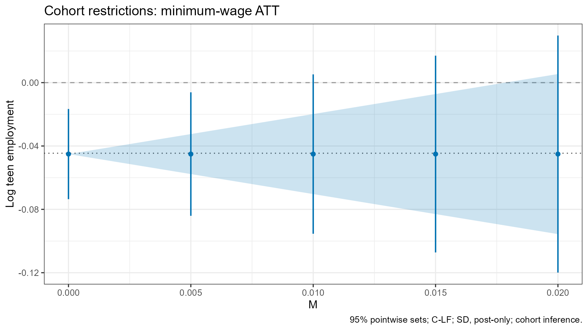
plot(att_aggregate, main = "Aggregate restrictions: minimum-wage ATT",
ylab = "Log teen employment")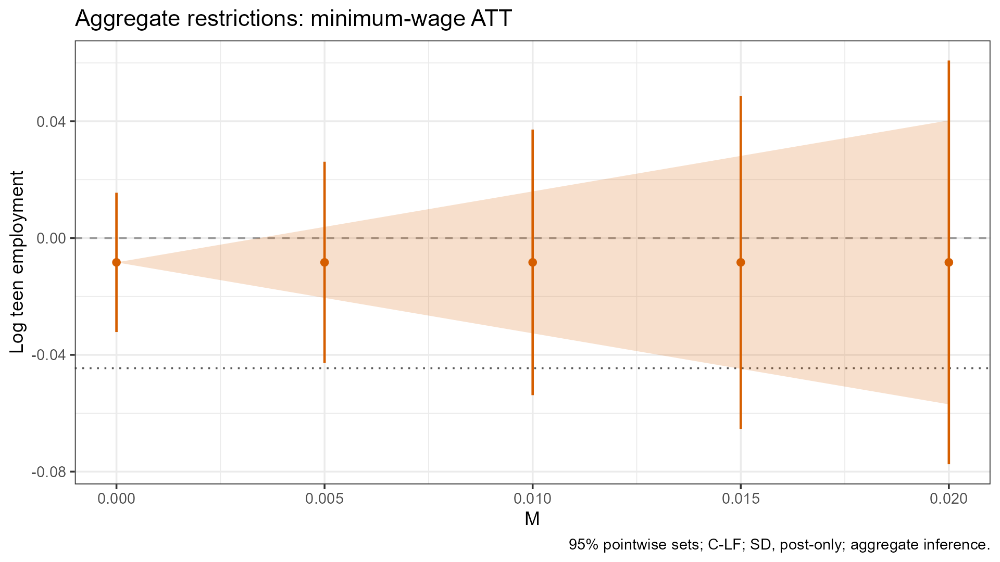
The dotted line is the conventional estimate, and the shaded band,
drawn when its bounds are finite, is the plug-in identified set. Under
the post-only restriction, the plug-in set is never empty, because the
pre-treatment path is not restricted. The full-path restriction also
bounds the curvature of the estimated pre-treatment paths. In this
application those paths violate it at every displayed M,
and the full-path plug-in sets are empty. The next chunk computes the
full-path FLCI for comparison.
att_flci <- cohort_sensitivity(fit_imp, restriction = "SD", M = M_application,
target = "att", method = "FLCI", seed = 123)
tab(data.frame(M = M_application,
post_only_plugin_empty = vapply(att$results,
function(z) isTRUE(z$diagnostics$plugin.empty), logical(1)),
full_path_plugin_empty = vapply(att_flci$results,
function(z) isTRUE(z$diagnostics$plugin.empty), logical(1))))| M | post_only_plugin_empty | full_path_plugin_empty |
|---|---|---|
| 0.000 | FALSE | TRUE |
| 0.005 | FALSE | TRUE |
| 0.010 | FALSE | TRUE |
| 0.015 | FALSE | TRUE |
| 0.020 | FALSE | TRUE |
tab(rows(list(post_only_CLF = att, full_path_FLCI = att_flci)))| example | target | M | component | lower | upper | success | status |
|---|---|---|---|---|---|---|---|
| post_only_CLF | att | 0.000 | 1 | -0.07355 | -0.01664 | TRUE | ok |
| post_only_CLF | att | 0.005 | 1 | -0.08407 | -0.00611 | TRUE | ok |
| post_only_CLF | att | 0.010 | 1 | -0.09540 | 0.00521 | TRUE | ok |
| post_only_CLF | att | 0.015 | 1 | -0.10720 | 0.01702 | TRUE | ok |
| post_only_CLF | att | 0.020 | 1 | -0.11992 | 0.02974 | TRUE | ok |
| full_path_FLCI | att | 0.000 | 1 | -0.08948 | -0.04291 | TRUE | ok |
| full_path_FLCI | att | 0.005 | 1 | -0.08376 | -0.01278 | TRUE | ok |
| full_path_FLCI | att | 0.010 | 1 | -0.09572 | 0.00218 | TRUE | ok |
| full_path_FLCI | att | 0.015 | 1 | -0.10696 | 0.01678 | TRUE | ok |
| full_path_FLCI | att | 0.020 | 1 | -0.11960 | 0.02941 | TRUE | ok |
The plug-in calculation treats the estimated paths as fixed, whereas the FLCI accounts for sampling uncertainty and can be nonempty when the plug-in set is empty. An empty full-path plug-in set is therefore not by itself a specification test. The FLCI’s optimized center can differ from the conventional estimate.
Aggregate inference transforms the estimates and covariance to
and
and restricts the aggregated coefficients. The same numerical
M therefore imposes a different assumption under cohort and
aggregate inference.
On a balanced panel, appropriately normalized Imp and CS-NYT block
biases differ only by cohort constants, which the SD and RM restrictions
do not detect, so their cohort identified sets coincide. Because the
package uses a common covariance construction and FLCI selection rule,
the theoretical confidence sets coincide as well, under CR1 or CR2 (the
CR2 shares do not depend on the estimator). Computed sets agree up to
numerical precision when controls and seeds match, although either
search can report an unresolved result. The equivalence does not cover
conventional coefficients and standard errors, CS-NT, aggregate
restrictions, covariances supplied to cohort_input(), or
unbalanced panels. The comparison below uses the same bounds, seed,
covariance, representation, and procedure.
att_nyt <- cohort_sensitivity(fit_nyt, restriction = "SD", M = M_application,
target = "att", seed = 123)
tab(data.frame(M = att$intervals$M, Imp_status = att$intervals$status,
CS_NYT_status = att_nyt$intervals$status,
lower_difference = att$intervals$lower - att_nyt$intervals$lower,
upper_difference = att$intervals$upper - att_nyt$intervals$upper), digits = 10)| M | Imp_status | CS_NYT_status | lower_difference | upper_difference |
|---|---|---|---|---|
| 0.000 | ok | ok | 9.30e-09 | -9.30e-09 |
| 0.005 | ok | ok | 2.54e-08 | -2.54e-08 |
| 0.010 | ok | ok | -3.00e-08 | 3.00e-08 |
| 0.015 | ok | ok | 1.06e-08 | -1.06e-08 |
| 0.020 | ok | ok | 1.04e-08 | -1.04e-08 |
target_weights <- function(x) do.call(rbind, lapply(x$targets, function(z) {
j <- which(z$target != 0)
data.frame(target = z$id, coordinate = names(z$target)[j],
weight = as.numeric(z$target[j]))
}))
tab(target_weights(att))| target | coordinate | weight |
|---|---|---|
| att | delta_post_g4_s1 | 0.06993 |
| att | delta_post_g4_s2 | 0.06993 |
| att | delta_post_g4_s3 | 0.06993 |
| att | delta_post_g4_s4 | 0.06993 |
| att | delta_post_g6_s1 | 0.15594 |
| att | delta_post_g6_s2 | 0.15594 |
| att | delta_post_g7_s1 | 0.40839 |
tab(target_weights(dynamic))| target | coordinate | weight |
|---|---|---|
| s1 | delta_post_g4_s1 | 0.11025 |
| s1 | delta_post_g6_s1 | 0.24587 |
| s1 | delta_post_g7_s1 | 0.64388 |
| s2 | delta_post_g4_s2 | 0.30960 |
| s2 | delta_post_g6_s2 | 0.69040 |
| s3 | delta_post_g4_s3 | 1.00000 |
| s4 | delta_post_g4_s4 | 1.00000 |
tab(rows(list(cohort_framework = dynamic, aggregate_framework = dynamic_aggregate)))| example | target | M | component | lower | upper | success | status |
|---|---|---|---|---|---|---|---|
| cohort_framework | s1 | 0.015 | 1 | -0.03593 | 0.02528 | TRUE | ok |
| cohort_framework | s2 | 0.015 | 1 | -0.16679 | -0.00930 | TRUE | ok |
| cohort_framework | s3 | 0.015 | 1 | -0.32897 | 0.02671 | TRUE | ok |
| cohort_framework | s4 | 0.015 | 1 | -0.42534 | 0.10331 | TRUE | ok |
| aggregate_framework | s1 | 0.015 | 1 | -0.03596 | 0.02531 | TRUE | ok |
| aggregate_framework | s2 | 0.015 | 1 | -0.07097 | 0.07430 | TRUE | ok |
| aggregate_framework | s3 | 0.015 | 1 | -0.17295 | 0.09430 | TRUE | ok |
| aggregate_framework | s4 | 0.015 | 1 | -0.23923 | 0.16558 | TRUE | ok |
The weights show which cells define each estimand. Dynamic targets at different periods can average different cohorts, so changes across periods need not reflect a fixed cohort mix.
plot(dynamic, M = .015, main = "Dynamic effects at M = .015",
ylab = "Log teen employment")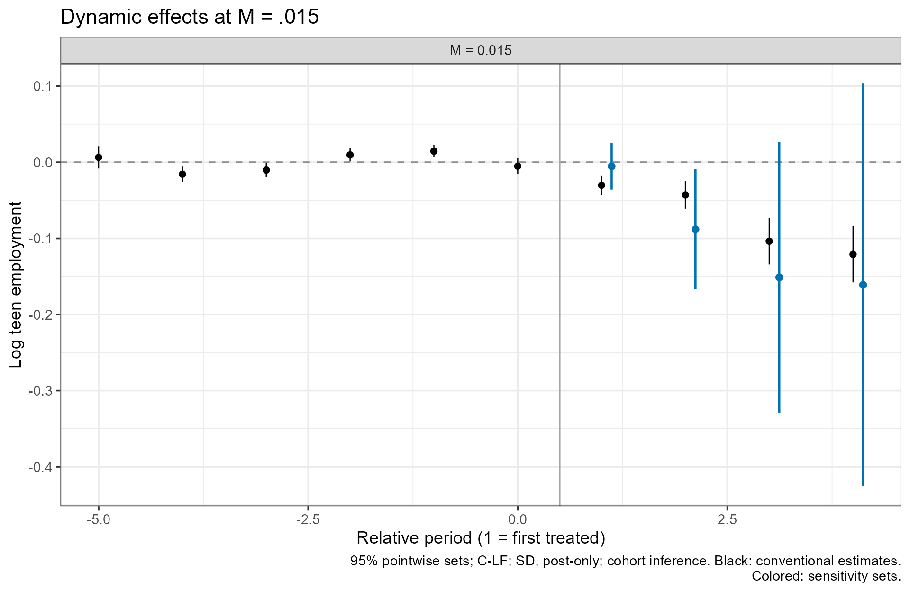
chosen_cohort <- sort(unique(fit_imp$coordinate_info$cohort))[1]
plot(cohort_dynamic, M = .015, cohorts = chosen_cohort,
main = "One cohort: conventional estimates and sensitivity sets",
ylab = "Log teen employment")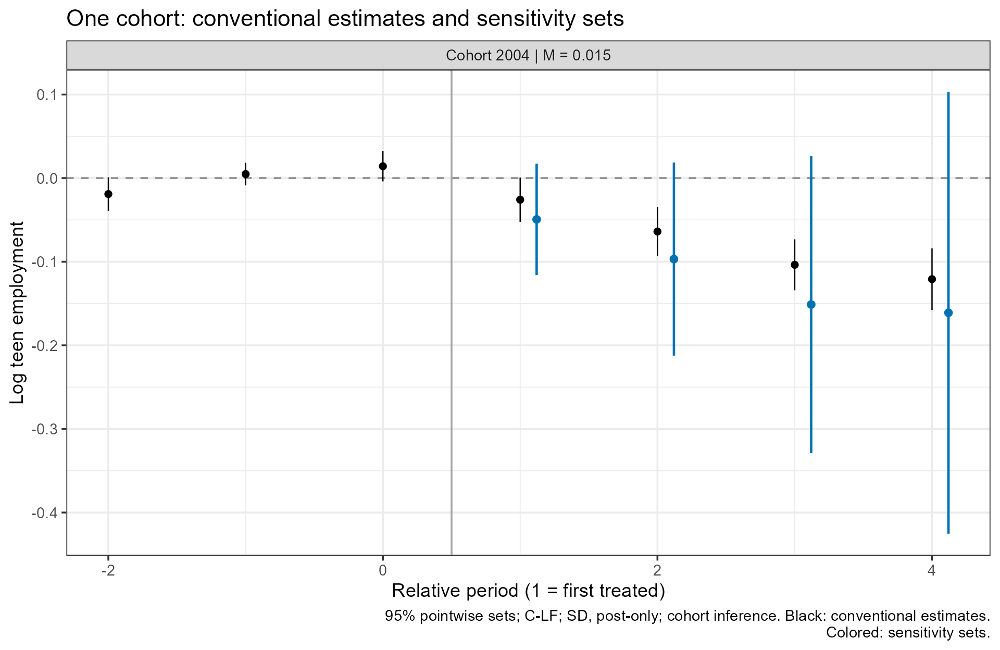
In plot(), M selects bounds that were
already computed, and cohorts selects cohorts by adoption
index; neither reruns inference.
Balanced targets and balanced aggregation
The balanced window contains the relative periods observed for every
cohort. In this application it runs from
,
the first period of the 2004 cohort, to
,
because the 2007 cohort is treated for one year. With
balanced = TRUE the ATT averages the window’s
post-treatment cells with the same cohort weights in every period, here
the effect in the first treated year. Aggregate inference then forms the
aggregated event study only on the window, so the same cohorts enter
every period.
M_balanced <- c(0, .01, .02)
att_balanced <- cohort_sensitivity(fit_imp, M = M_balanced, balanced = TRUE, seed = 123)
att_balanced_window <- cohort_sensitivity(fit_imp, M = M_balanced, balanced = TRUE,
cohort.paths = "window", seed = 123)
att_balanced_aggregate <- cohort_sensitivity(fit_imp, M = M_balanced, balanced = TRUE,
framework = "aggregate", seed = 123)
att_balanced$settings$window
#> lower upper
#> -2 1
tab(target_weights(att_balanced))| target | coordinate | weight |
|---|---|---|
| att | delta_post_g4_s1 | 0.11025 |
| att | delta_post_g6_s1 | 0.24587 |
| att | delta_post_g7_s1 | 0.64388 |
tab(rows(list(cohort_full = att_balanced, cohort_window = att_balanced_window,
aggregate = att_balanced_aggregate)))| example | target | M | component | lower | upper | success | status |
|---|---|---|---|---|---|---|---|
| cohort_full | att | 0.00 | 1 | -0.02260 | 0.01195 | TRUE | ok |
| cohort_full | att | 0.01 | 1 | -0.03141 | 0.02076 | TRUE | ok |
| cohort_full | att | 0.02 | 1 | -0.04070 | 0.03005 | TRUE | ok |
| cohort_window | att | 0.00 | 1 | -0.02267 | 0.01202 | TRUE | ok |
| cohort_window | att | 0.01 | 1 | -0.03148 | 0.02083 | TRUE | ok |
| cohort_window | att | 0.02 | 1 | -0.04060 | 0.02995 | TRUE | ok |
| aggregate | att | 0.00 | 1 | -0.02249 | 0.01184 | TRUE | ok |
| aggregate | att | 0.01 | 1 | -0.03061 | 0.01996 | TRUE | ok |
| aggregate | att | 0.02 | 1 | -0.04014 | 0.02949 | TRUE | ok |
print(att_balanced_aggregate)
#> aggregate inference | SD | C-LF | post-only
#> Target: att | 95.0% pointwise confidence sets
#> Covariance: CR1 cluster-robust, 2284 clusters
#> Balanced window: relative periods -2 to 1; target period 1; aggregate path on the window
#> target M component lower upper status
#> att 0.00 1 -0.02248521 0.01183572 ok
#> att 0.01 1 -0.03061324 0.01996375 ok
#> att 0.02 1 -0.04013989 0.02949040 okUnder cohort inference, cohort.paths = "full", the
default, keeps each cohort’s whole path, as in the paper.
cohort.paths = "window" uses each path only inside the
window: the RM benchmark comes from the pre-treatment changes in the
window, the full-path SD restriction bounds only the pre-treatment
second differences in the window, and later periods are dropped. Under
the post-only SD restriction used here, the two choices give the same
plug-in identified set, and their confidence sets differ at most
slightly. With one post-treatment period in the window, the post-only
plug-in identified set is also the same under aggregate inference; the
confidence sets differ because the two analyses use different
coefficients and covariances.
Balanced aggregation changes the estimand. It removes the change in
the cohorts averaged across periods, but not the change in the
not-yet-treated comparison groups, which enters the imputation and
CS-NYT biases through the bias map. In the paper’s simulations,
aggregate inference on the balanced window comes closer to cohort
inference but still differs from it. On a balanced panel, Imp and CS-NYT
give the same balanced cohort inference under either
cohort.paths value, but in general not the same aggregate
inference. Balanced aggregate results store the aggregation matrix, the
aggregated coefficients, and their covariance in
aggregation.
FLCI weights
The FLCI is a linear estimator. Its weights on the post-treatment
coefficients are the target weights, and flci_weights()
tabulates the others: the weights
on the pre-treatment coefficients
(weights = "coefficients", the default) and the weights
on the pure pre-treatment second differences
(weights = "gamma"), with each weight’s contribution to the
center. plot(result, type = "weights") draws them against
the bound, one row per coefficient or second difference, grouped by
cohort.
att_flci_post <- cohort_sensitivity(fit_imp, restriction = "SD", M = M_application,
target = "att", method = "FLCI",
full.path = FALSE, seed = 123)
plot(att_flci_post, type = "weights", main = "Post-only FLCI: weights v")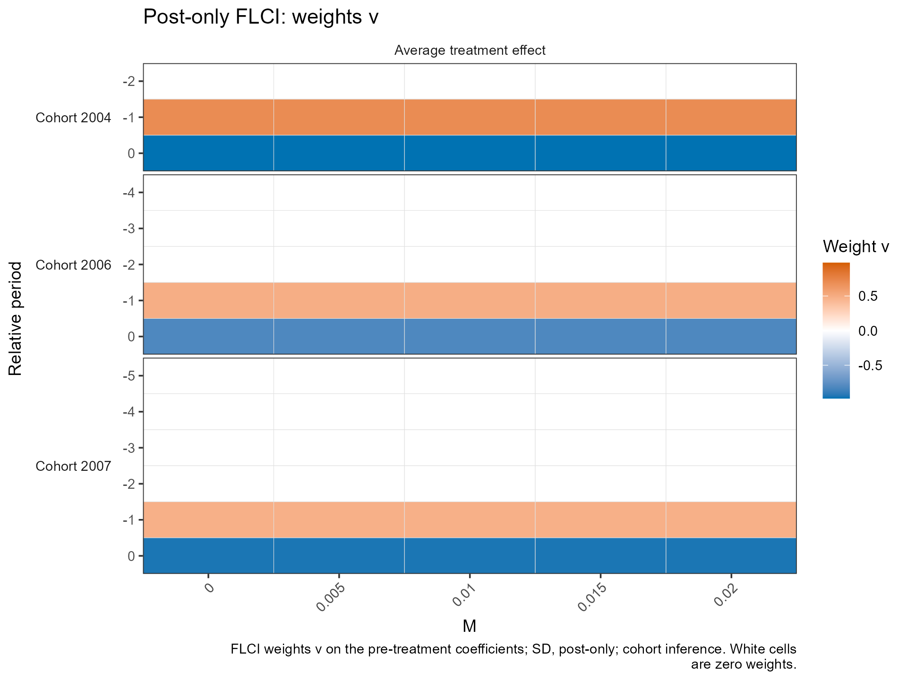
plot(att_flci, type = "weights", main = "Full-path FLCI: weights v")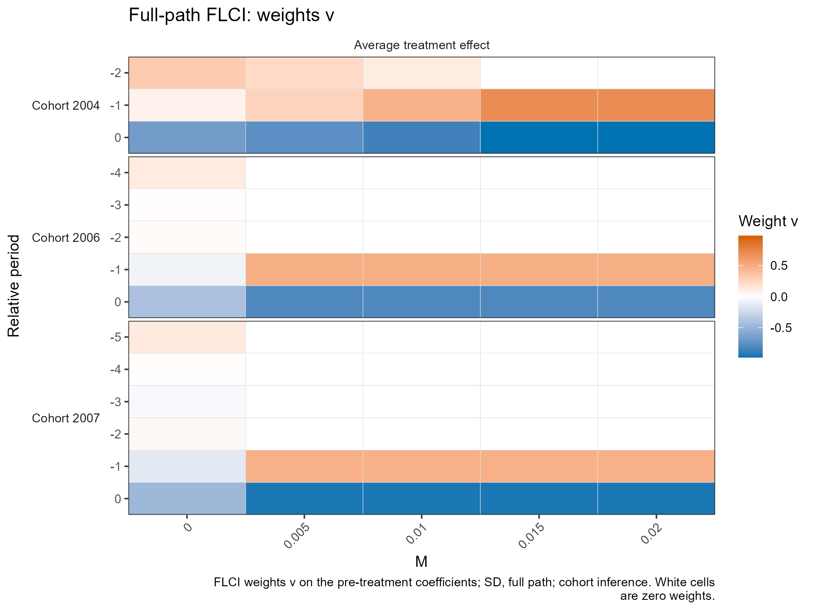
The post-only FLCI puts weight only on each cohort’s last two
pre-treatment coefficients,
and
:
it subtracts the linear extrapolation of the cohort’s pre-treatment
slope, and its weights do not depend on M. With CS-NYT it
also weights the adjustment cohorts’ coefficients in the base period.
The full-path FLCI adds
,
a combination of the pure pre-treatment second differences, so its
weights reach earlier periods. Each cohort’s pre-treatment coefficients
satisfy one normalization (the imputation coefficients sum to zero, and
the CS coefficient at
is zero), so the weights are unique only up to that direction.
flci_weights() reports the paper’s form
;
results[[k]]$weights$coefficients stores its projection
orthogonal to the normalization, which gives the same estimate.
plot(att_flci, type = "weights", weights = "gamma", labels = TRUE,
main = "Full-path FLCI: weights gamma")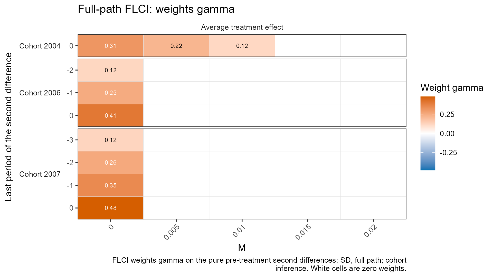
gamma_att <- flci_weights(att_flci, weights = "gamma")
centers <- attr(gamma_att, "centers")
tab(data.frame(M = centers$M, FLCI_center = centers$center,
post_only_center = centers$post.only.center,
sum_of_contributions = as.numeric(tapply(gamma_att$contribution, gamma_att$M, sum))))| M | FLCI_center | post_only_center | sum_of_contributions |
|---|---|---|---|
| 0.000 | -0.06619 | -0.04509 | -0.02110 |
| 0.005 | -0.04827 | -0.04509 | -0.00318 |
| 0.010 | -0.04677 | -0.04509 | -0.00168 |
| 0.015 | -0.04509 | -0.04509 | 0.00000 |
| 0.020 | -0.04509 | -0.04509 | 0.00000 |
tab(flci_weights(att_flci, weights = "gamma", by = "cohort"))| target | label | M | cohort | elements | weight | l1 | share | contribution | tie.break |
|---|---|---|---|---|---|---|---|---|---|
| att | Average treatment effect | 0.000 | 4 | 1 | 0.31192 | 0.31192 | 0.13594 | -0.00455 | FALSE |
| att | Average treatment effect | 0.000 | 6 | 3 | 0.77387 | 0.77387 | 0.33727 | 0.00310 | FALSE |
| att | Average treatment effect | 0.000 | 7 | 4 | 1.20872 | 1.20872 | 0.52679 | -0.01965 | FALSE |
| att | Average treatment effect | 0.005 | 4 | 1 | 0.21791 | 0.21791 | 1.00000 | -0.00318 | FALSE |
| att | Average treatment effect | 0.005 | 6 | 3 | 0.00000 | 0.00000 | 0.00000 | 0.00000 | FALSE |
| att | Average treatment effect | 0.005 | 7 | 4 | 0.00000 | 0.00000 | 0.00000 | 0.00000 | FALSE |
| att | Average treatment effect | 0.010 | 4 | 1 | 0.11508 | 0.11508 | 1.00000 | -0.00168 | FALSE |
| att | Average treatment effect | 0.010 | 6 | 3 | 0.00000 | 0.00000 | 0.00000 | 0.00000 | FALSE |
| att | Average treatment effect | 0.010 | 7 | 4 | 0.00000 | 0.00000 | 0.00000 | 0.00000 | FALSE |
| att | Average treatment effect | 0.015 | 4 | 1 | 0.00000 | 0.00000 | NA | 0.00000 | FALSE |
| att | Average treatment effect | 0.015 | 6 | 3 | 0.00000 | 0.00000 | NA | 0.00000 | FALSE |
| att | Average treatment effect | 0.015 | 7 | 4 | 0.00000 | 0.00000 | NA | 0.00000 | FALSE |
| att | Average treatment effect | 0.020 | 4 | 1 | 0.00000 | 0.00000 | NA | 0.00000 | FALSE |
| att | Average treatment effect | 0.020 | 6 | 3 | 0.00000 | 0.00000 | NA | 0.00000 | FALSE |
| att | Average treatment effect | 0.020 | 7 | 4 | 0.00000 | 0.00000 | NA | 0.00000 | FALSE |
At
the full-path FLCI uses every pure pre-treatment second difference as a
control variate. Each unit of weight costs M of worst-case
bias, so the weights shrink as M grows: at
M = .005 and .01 only the 2004 cohort’s second
difference keeps weight, and from M = .015 all weights are
zero and the two FLCIs coincide. The contributions
add up to the FLCI center minus the post-only center, which is also the
center of the post-only plug-in identified set.
by = "cohort" sums them within each cohort. Imputation and
CS-NYT give the same
,
centers, and contributions.
4. Procedures and SD scopes
The six comparisons below cross the three procedures with the two SD scopes. More pre-treatment periods give the full-path restriction more information about curvature. The comparisons use the artificial panel with 200 calibration draws and a 21-point grid to keep the guide quick. These are demonstration settings, not the defaults or a recommendation.
illustrative_control <- list(lf.sims = 200L, grid.points = 21L)
sd_examples <- list()
for (method in c("FLCI", "Conditional", "C-LF")) {
for (full in c(FALSE, TRUE)) {
label <- paste(method, if (full) "full path" else "post-only")
sd_examples[[label]] <- cohort_sensitivity(small_fit, restriction = "SD",
M = c(0, .015), method = method, full.path = full, target = "att",
seed = 2026, control = illustrative_control)
}
}
tab(rows(sd_examples))| example | target | M | component | lower | upper | success | status |
|---|---|---|---|---|---|---|---|
| FLCI post-only | att | 0.000 | 1 | 0.00995 | 0.19192 | TRUE | ok |
| FLCI post-only | att | 0.015 | 1 | -0.00392 | 0.20579 | TRUE | ok |
| FLCI full path | att | 0.000 | 1 | 0.03479 | 0.18898 | TRUE | ok |
| FLCI full path | att | 0.015 | 1 | 0.01200 | 0.20705 | TRUE | ok |
| Conditional post-only | att | 0.000 | 1 | 0.00995 | 0.19192 | TRUE | ok |
| Conditional post-only | att | 0.015 | 1 | -0.01119 | 0.21306 | TRUE | ok |
| Conditional full path | att | 0.000 | 1 | -0.04139 | 0.20663 | TRUE | ok |
| Conditional full path | att | 0.015 | 1 | -0.05748 | 0.22748 | TRUE | ok |
| C-LF post-only | att | 0.000 | 1 | 0.01077 | 0.19110 | TRUE | ok |
| C-LF post-only | att | 0.015 | 1 | -0.01182 | 0.21369 | TRUE | ok |
| C-LF full path | att | 0.000 | 1 | -0.04358 | 0.20901 | TRUE | ok |
| C-LF full path | att | 0.015 | 1 | -0.05975 | 0.22988 | TRUE | ok |
The FLCI optimizes a linear estimator, accounting for its standard deviation and worst-case bias. C-LF adds a least-favorable first stage, calibrated by simulation, to the conditional test. The procedures need not give the same set or center; the table lists each piece of a set on its own row.
default_sd <- cohort_sensitivity(small_fit, M = .015, seed = 2026)
flci_sd <- cohort_sensitivity(small_fit, M = .015, method = "FLCI", seed = 2026)
tab(rows(list(default_SD = default_sd, FLCI_SD = flci_sd)))| example | target | M | component | lower | upper | success | status |
|---|---|---|---|---|---|---|---|
| default_SD | att | 0.015 | 1 | -0.01162 | 0.21349 | TRUE | ok |
| FLCI_SD | att | 0.015 | 1 | 0.01200 | 0.20705 | TRUE | ok |
With method = NULL, the package uses C-LF for both SD
and RM. For SD, full.path = NULL means FALSE
for C-LF and Conditional and TRUE for the FLCI, so
method = "FLCI" alone requests the full-path FLCI. The FLCI
uses the pure pre-treatment second differences only under the full-path
restriction, in addition to the last two pre-treatment periods that
every post-only procedure extrapolates. Its coverage guarantee then no
longer holds when those second differences exceed M, and
its coverage also deteriorates when some cohorts contain only a few
units.
5. Relative-magnitude restrictions
RM bounds each post-treatment change in a cohort’s block bias, , by times the same cohort’s largest absolute pre-treatment change; the bound has no units. The paper recommends choosing between RM and SD based on the empirical context. The cohort restriction is a union of cases, one for each combination of where and with which sign each cohort’s largest pre-treatment change occurs. In the minimum-wage application each positive bound requires 320 cases, and the examples therefore use the artificial panel.
With framework = "aggregate", RM restricts the
aggregated coefficients using the aggregated path’s own pre-treatment
benchmark, not a separate benchmark for each cohort.
rm_clf <- cohort_sensitivity(small_fit, restriction = "RM", M = c(0, 1),
method = "C-LF", seed = 2026, control = illustrative_control)
rm_conditional <- cohort_sensitivity(small_fit, restriction = "RM", M = c(0, 1),
method = "Conditional", seed = 2026,
control = illustrative_control)
rm_aggregate <- cohort_sensitivity(small_fit, restriction = "RM", M = c(0, 1),
framework = "aggregate", seed = 2026,
control = illustrative_control)
tab(rows(list(cohort_CLF = rm_clf, cohort_Conditional = rm_conditional,
aggregate_CLF = rm_aggregate)))| example | target | M | component | lower | upper | success | status |
|---|---|---|---|---|---|---|---|
| cohort_CLF | att | 0 | 1 | 0.02790 | 0.12001 | TRUE | ok |
| cohort_CLF | att | 1 | 1 | -0.02910 | 0.18340 | TRUE | ok |
| cohort_Conditional | att | 0 | 1 | 0.02685 | 0.12107 | TRUE | ok |
| cohort_Conditional | att | 1 | 1 | -0.02738 | 0.18158 | TRUE | ok |
| aggregate_CLF | att | 0 | 1 | 0.02637 | 0.11674 | TRUE | ok |
| aggregate_CLF | att | 1 | 1 | -0.02350 | 0.16193 | TRUE | ok |
plot(rm_clf, main = "Artificial panel: RM confidence sets", ylab = "Artificial effect")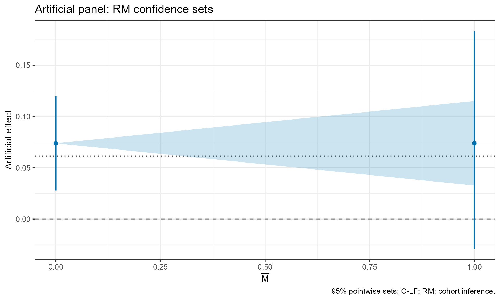
RM has no full-path option and no FLCI; requesting either is an input error.
6. Read and reuse results
A cohort_fit holds the coefficients
betahat, their full covariance Sigma, the bias
map W, the normalization, the coefficient
labels coordinate_info, the cohort masses, and sample
diagnostics; coef() and vcov() extract the
first two. A sensitivity result holds the conventional target estimates,
every piece of each confidence set, the settings, and per-task
diagnostics, including, for Conditional inference, the searched ranges
that summary() tabulates.
print(default_sd)
#> cohort inference | SD | C-LF | post-only
#> Target: att | 95.0% pointwise confidence sets
#> Covariance: CR1 cluster-robust, 72 clusters
#> target M component lower upper status
#> att 0.015 1 -0.01161885 0.21349 ok
print(summary(default_sd))
#> Covariance: CR1 cluster-robust, 72 clusters
#>
#> Conventional estimates
#> target label cohort relative_period estimate se
#> att Average treatment effect NA NA 0.06147426 0.02208378
#> lower upper
#> 0.01819084 0.1047577
#>
#> Sensitivity confidence sets
#> target label cohort relative_period M component
#> att Average treatment effect NA NA 0.015 1
#> lower upper center plugin.lower plugin.upper success status message
#> -0.01161885 0.21349 0.1009356 0.07343557 0.1284356 TRUE ok
#>
#> Settings
#> $restriction
#> [1] "SD"
#>
#> $method
#> [1] "c_lf"
#>
#> $full.path
#> [1] FALSE
#>
#> $target
#> [1] "att"
#>
#> $framework
#> [1] "cohort"
#>
#> $M
#> [1] 0.015
#>
#> $conf.level
#> [1] 0.95
#>
#> $parallel
#> [1] FALSE
#>
#> $cores
#> [1] 1
#>
#> $seed
#> [1] 2026
#>
#> $task.seeds
#> [1] 106756
#>
#> $control
#> list()
#>
#>
#> Diagnostics
#> $flags
#> character(0)
#>
#> $cohort_counts
#> cohort units clusters mass
#> 1 0 24 24 24
#> 2 3 24 24 24
#> 3 4 24 24 24
#>
#> $cell_counts
#> cohort time_index observed_units observed_clusters mass
#> 1 0 1 24 24 24
#> 2 0 2 24 24 24
#> 3 0 3 24 24 24
#> 4 0 4 24 24 24
#> 5 3 1 24 24 24
#> 6 3 2 24 24 24
#> 7 3 3 24 24 24
#> 8 3 4 24 24 24
#> 9 4 1 24 24 24
#> 10 4 2 24 24 24
#> 11 4 3 24 24 24
#> 12 4 4 24 24 24
#>
#> $covariance_rank
#> [1] 6
#>
#> $normalized_dimension
#> [1] 6
#>
#> $covariance_eigenvalues
#> [1] 1.702450e-03 6.970245e-04 5.656011e-04 4.578257e-04 3.931797e-04
#> [6] 2.725125e-04 1.250348e-19 7.834303e-20
#>
#> $covariance_rank_tolerance
#> [1] 1.70245e-12
#>
#> $normalization_error
#> [1] 3.686287e-17
#>
#> $covariance_normalization_error
#> [1] 6.776264e-20
#>
#> $n_clusters
#> [1] 72
#>
#> $n_observations
#> [1] 288
#>
#> $n_cells
#> [1] 12
#>
#> $cr1
#> [1] 1.054501
#>
#> $balanced
#> [1] TRUE
#>
#> $bias_mapping
#> [1] "exact_balanced_panel"
#>
#> $missingness
#> $missingness$absent_rows
#> [1] 0
#>
#> $missingness$missing_outcomes_observed
#> [1] 0
#>
#> $missingness$treatment_filled
#> [1] 0
#>
#> $missingness$treatment_filled_observed_rows
#> [1] 0
#>
#> $missingness$treatment_filled_absent_rows
#> [1] 0
#>
#> $missingness$leading_unknown_treatment
#> [1] 0
#>
#> $missingness$outcomes_excluded_unknown_treatment
#> [1] 0
#>
#> $missingness$outcomes_imputed
#> [1] 0Extracting confidence sets
conditional <- sd_examples[["Conditional full path"]]
tab(conditional$estimates)| target | label | cohort | relative_period | estimate | se | lower | upper |
|---|---|---|---|---|---|---|---|
| att | Average treatment effect | NA | NA | 0.06147 | 0.02208 | 0.01819 | 0.10476 |
tab(sets(conditional))| target | M | component | lower | upper | success | status |
|---|---|---|---|---|---|---|
| att | 0.000 | 1 | -0.04139 | 0.20663 | TRUE | ok |
| att | 0.015 | 1 | -0.05748 | 0.22748 | TRUE | ok |
tab(conditional$results[[1]]$components)| lower | upper |
|---|---|
| -0.04139 | 0.20663 |
Each target and bound can occupy several rows of
intervals, one for each piece. Keep the
component column and every row when saving results; taking
min(lower) and max(upper) would fill the gaps
between pieces. results[[k]] follows the target order, then
the sorted bounds.
f <- flci_sd$results[[1]]
tab(data.frame(conventional_estimate = flci_sd$estimates$estimate,
optimized_center = mean(c(f$components$lower, f$components$upper)),
standard_error = f$diagnostics$standard.error,
maximum_bias = f$diagnostics$maximum.bias,
half_length = f$diagnostics$half.length,
solver_status = f$diagnostics$solver.status))| conventional_estimate | optimized_center | standard_error | maximum_bias | half_length | solver_status |
|---|---|---|---|---|---|
| 0.06147 | 0.10952 | 0.03969 | 0.03202 | 0.09753 | direct_convergence_0 |
The FLCI’s linear weights (results[[k]]$weights)
determine its optimized center, and the trade-off between its standard
deviation and worst-case bias determines its half-length.
flci_weights() tabulates the weights, and
plot(result, type = "weights") draws them (FLCI weights).
Outcomes and statuses
Each target and bound ends in one of these outcomes:
| Outcome | Meaning | How to recognize it |
|---|---|---|
| Nonempty set | One or more computed pieces |
success = TRUE; bounds may be infinite |
| Certified empty set | C-LF’s least-favorable first stage rejects every value |
success = TRUE, status empty, missing
bounds |
| Unresolved empty search | A finite search accepted no value and no certificate applies |
success = FALSE, status
uncertified_empty_search, warning |
| Unsupported task | No sampling variation in the target or tested moments, or too little pre-treatment history |
success = FALSE, a status such as
unsupported_zero_variance or
insufficient_prehistory, warning |
| Numerical failure or limit | The search or solver failed or did not finish within its controls |
success = FALSE, a status such as
evaluation_limit or inference_error, message,
warning |
| Invalid input | An argument or data requirement is violated | Error; no inference is run |
Read each row’s status and message rather
than relying on a fixed list of status names. Further details are in
these places:
| Where | What to check |
|---|---|
result$intervals |
Every piece of each set, with bounds, center, plug-in bounds,
success, status, and message
|
result$estimates, result$targets
|
Conventional estimates and the cell weights that define each target |
result$results[[k]] |
Detailed output for one target and bound, including procedure diagnostics and FLCI weights |
result$settings |
The options used and the assigned task seeds |
result$aggregation |
With balanced = TRUE under aggregate inference: the
aggregation matrix, aggregated coefficients, covariance, and
normalization on the balanced window |
summary(result)$search.ranges |
The ranges a Conditional search covered |
fit$diagnostics |
Cohort and cell counts, clusters, covariance rank, and
flags for unbalanced designs, few clusters, single-cluster
cells, extra rank loss, or near-zero post-treatment variance |
fit$data_info$missingness |
Absent rows, missing outcomes, filled treatment statuses, and outcomes excluded by unknown leading statuses |
fit$cluster_shares |
Under CR2, each cluster’s share of its cohort and the factor applied to its score |
Before reporting a result, check its status, the sample support, the covariance diagnostics, and, for Conditional inference, the searched range. Then report the target and its weights, the cohort or aggregate representation, the restriction and the units of its bound, the procedure and SD scope, the confidence level, and every piece of the set.
7. Numerical controls and reproducibility
All numerical controls go in one uniquely named control
list.
| Key | Default | Meaning |
|---|---|---|
lf.sims |
2000 |
C-LF calibration draws (not bootstrap replications) |
grid.points |
101 |
Grid points, at least 5; for Conditional searches with
grid.radius above 8, the reference density |
endpoint.tol |
NULL |
Endpoint tolerance in outcome units; by default 1e-5 times the conventional target standard error |
grid.radius |
8 |
Initial search margin for Conditional and RM C-LF (see
?cohort_sensitivity); not used by SD C-LF |
max.expansions |
6 |
Range doublings for Conditional, including the two expansions needed to confirm a stable range (0 or 1 returns no set), and range expansions for RM C-LF; not used by SD C-LF |
max.refinements |
3 |
Finer-grid retries after an unresolved search; 0 disables them |
max.evaluations |
100000 |
Point evaluations per target and bound, counted across all probes, audits, and retries |
topology.audit |
TRUE |
FALSE skips the interior grid comparisons; domain and
endpoint checks remain |
max.components |
100000 |
Maximum number of RM cases |
flci.solver |
"direct" |
FLCI optimizer, "direct" or "nested"
(requires CVXR) |
flci.control |
list() |
Solver-specific settings, listed below |
More calibration draws reduce the Monte Carlo noise in C-LF, and a denser grid adds point tests; both take more time. For final results, increase the calibration draws and check the numerical diagnostics.
Conditional and C-LF sets come from a finite numerical search. A
Conditional search does not rule out pieces outside the range it
searched, which summary(result)$search.ranges reports. For
SD, C-LF searches a range that its first stage certifies (if it cannot
certify one, it reports no set), but this certifies only the outer
range, not the interior. Any finite grid can miss very narrow pieces or
gaps. The evaluation count does not limit running time.
limited <- cohort_sensitivity(small_fit, M = .015, method = "Conditional", seed = 2026,
control = list(grid.points = 21L, max.evaluations = 10L))
#> Warning: 1 inference task(s) failed; inspect intervals$status and
#> intervals$message.
tab(limited$intervals[, c("status", "message")])| status | message |
|---|---|
| evaluation_limit | The requested wider Conditional grid exceeds the cumulative point-evaluation budget or R’s integer range. |
The warning and failed status mark a computational limit: the calculation stopped before it resolved the set, so the result is neither an empty confidence set nor a rejection.
With an explicit seed, each task receives a fixed
random-number stream, the results do not depend on the number of
workers, and the caller’s random-number state is restored;
seed = NULL draws the task seeds from the caller’s stream.
parallel = TRUE runs independent target and bound tasks, or
the cases of a single RM task, on cores workers.
FLCI solvers
| Solver |
flci.control key |
Default and constraint |
|---|---|---|
| direct | n_random_starts |
8L, nonnegative integer |
| direct | maxit |
20000L, nonnegative integer |
| nested | solver |
"ECOS", one available CVXR solver name |
| nested | solver_opts |
list(), named options passed to CVXR |
| nested | outer_tol |
1e-7, positive |
| nested | grid_size |
15L, integer at least 3 |
| nested | feasibility_tol |
1e-6, positive |
| nested | objective_tol |
1e-6, positive |
Each key belongs to its solver, and the two lists cannot be mixed.
8. Supply external estimates and construct W
External input needs the full named vector of cohort-period coefficients (pre-treatment, reference, and post-treatment), its joint covariance , an invertible bias map with , and deterministic normalization constraints with and ; must preserve the normalization. The covariance may be singular (positive semidefinite), as normalizations usually make it. The pre-treatment coefficients must be block-bias estimates as defined in the paper. Marginal standard errors, an aggregated event study, or residual pre-trends do not carry this information.
The round trip below passes the artificial fit’s estimates through
cohort_input() and reruns the default analysis.
external <- cohort_input(betahat = coef(small_fit), vcov = vcov(small_fit),
coefficient_info = small_fit$coordinate_info, W = small_fit$W,
normalization = small_fit$normalization,
cohort_sizes = small_fit$cohort_masses, estimator = "imp")
external_result <- cohort_sensitivity(external, M = .015, seed = 2026)
tab(rows(list(internal = default_sd, external = external_result)))| example | target | M | component | lower | upper | success | status |
|---|---|---|---|---|---|---|---|
| internal | att | 0.015 | 1 | -0.01162 | 0.21349 | TRUE | ok |
| external | att | 0.015 | 1 | -0.01162 | 0.21349 | TRUE | ok |
coefficient_info needs the columns
coordinate, integer cohort, integer
relative_period, and type ("pre"
for pre-treatment and reference coefficients, "post"
otherwise). betahat must be named; the covariance and
W need row and column names, and the normalization needs
column names, that match the coefficient labels, and
cohort_input() aligns them. cohort_sizes needs
one positive finite value per treated cohort, named by its adoption
index.
W describes a mapping, not an estimator
W_nyt <- build_W(cohort_times = c(3, 4), cohort_sizes = c(`3` = 24, `4` = 24),
never_treated_size = 24, n_periods = 4, estimator = "cs_nyt")
dim(W_nyt)
#> [1] 8 8
W_nyt[grepl("delta_post", rownames(W_nyt)), , drop = FALSE]
#> delta_pre_g3_s-1 delta_pre_g3_s0 delta_pre_g4_s-2
#> delta_post_g3_s1 0 0 0
#> delta_post_g3_s2 0 0 0
#> delta_post_g4_s1 0 0 0
#> delta_pre_g4_s-1 delta_pre_g4_s0 delta_post_g3_s1
#> delta_post_g3_s1 0.0 0 1
#> delta_post_g3_s2 -0.5 0 0
#> delta_post_g4_s1 0.0 0 0
#> delta_post_g3_s2 delta_post_g4_s1
#> delta_post_g3_s1 0 0.0
#> delta_post_g3_s2 1 0.5
#> delta_post_g4_s1 0 1.0build_W() constructs the bias map for a balanced design
with fixed cohort sizes; it does not estimate coefficients or
covariances. cohort_times are distinct integer adoption
indices from 2 to n_periods, and all sizes, including the
never-treated size, must be positive.
Too little pre-treatment history
A fit can have too little pre-treatment history for sensitivity analysis:
short_history <- cohort_fit(Y ~ D, data = subset(small, time >= 2),
index = c("id", "time"), estimator = "cs_nt")
short_result <- cohort_sensitivity(short_history, M = .015, seed = 2026)
#> Warning: 1 inference task(s) failed; inspect intervals$status and
#> intervals$message.
tab(sets(short_result))| target | M | component | lower | upper | success | status |
|---|---|---|---|---|---|---|
| att | 0.015 | 1 | NA | NA | FALSE | insufficient_prehistory |
tab(short_result$intervals[, c("status", "message")])| status | message |
|---|---|
| insufficient_prehistory | Sensitivity analysis requires at least two pre-treatment periods for every included cohort/path. |
Under cohort inference, every treated cohort needs at least two
pre-treatment periods; this task returns
insufficient_prehistory and no set. One post-treatment
period is enough, as for the period-4 cohort of the full artificial
panel.
9. Plot choices
Fit plots accept type = "dynamic" (the default) or
"cohort-dynamic"; sensitivity plots take their form from
the computed target. main, xlab, and
ylab set the labels, and color overrides the
framework color. All plots return ggplot objects, which accept further
ggplot2 layers.
plot(fit_imp, type = "cohort-dynamic", cohorts = chosen_cohort,
main = "Conventional coefficients for one cohort",
xlab = "Relative period", ylab = "Log teen employment")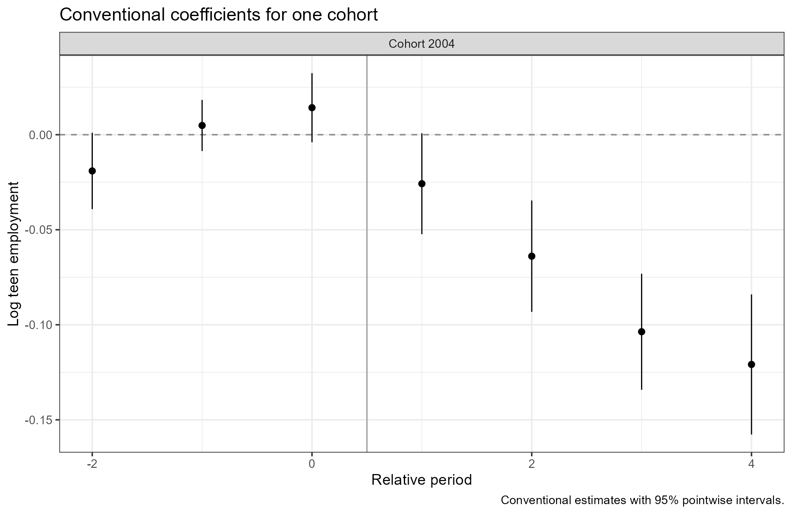
plot(att, M = c(0, .015, .02), identified.set = FALSE,
main = "Selected minimum-wage bounds",
xlab = "Allowed curvature M", ylab = "Log teen employment", color = "#5A3E85") +
theme(panel.grid.minor = element_blank())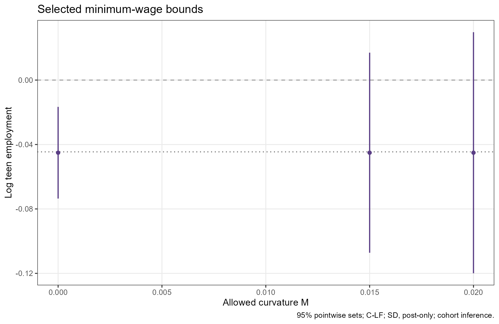
identified.set = FALSE removes the plug-in band from ATT
plots without changing the confidence sets. paper_palette()
returns the package’s colors for representations, procedures, or
cohorts.
For FLCI results, plot(result, type = "weights") draws
the weights as a heatmap instead of the sets; weights,
by, targets, and labels choose
what it shows (FLCI weights).